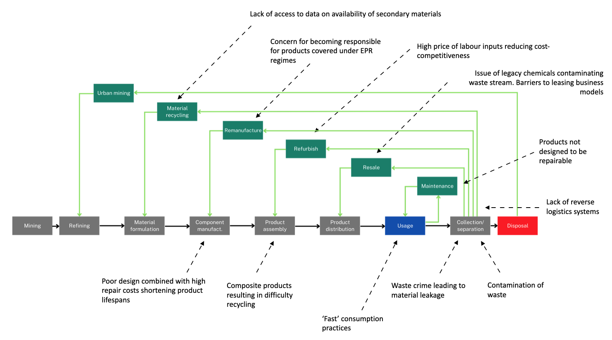

No intervention
Summary
One option available to policy-makers is to let otherwise uninterrupted market, societal and existing regulation dynamics define the level of future resource use and circularity while engaging in little to no proactive intervention to go beyond this. The Green Book recommends a ‘do-nothing’ option is explored in ex ante appraisal. In line with the NAO (2014), we consider under this approach: making use of existing regulation or simplifying and clarifying these; improving enforcement of existing regulation; and making legal remedies more accessible as options available under a ‘do-nothing’ scenario.
There is increasing evidence of CE activities being undertaken in areas where regulation is not a direct driver such as individual firms expanding into CE business models such as Cat Reman, Rolls Royce Power by the Hour, and a growth in remanufactured and second-hand sales.
How it works and current context
When looking at the UK today, many indicators point to the high degree of linearity in its economy and natural capital loss and depletion given the scale of material throughput. In 2018, the mass of materials directly entering the UK economy to meet domestic demand stood at more than 500 million tonnes (ONS, 2021), for instance, while when accounting for the full upstream material extraction along international supply chains, this figure and for primary raw materials specifically, was only slightly short of 1 billion tonnes (ONS, 2021). In the same year, over 220 million tonnes of waste were estimated to have been generated in the UK, almost 10% more than in 2010 (Defra, 2021). 70 million tonnes of this came from construction and demolition activities, 10 million tonnes was food waste (Wrap, 2021) and 2 million tonnes, textiles (Wrap, 2019). Of the waste generated in the UK today, a significant quantity is lost from the economy each year, with roughly a third entering landfills or incineration and an appreciate amount entering the natural environment via fly-tipping and littering (Defra, 2022; EA; 2022 KBT, 2020).
Looking backwards to look forwards
During the Paleolithic in which Homo sapiens and their Homo genus predecessors lived as scavengers and then hunter-fisher-gatherers, material accumulation was limited as mobility and adaptability to nature were the key traits conducive to survival. Human habitation of the British Isles in deep history was defined by the climate, with the extensive ice sheets of the ‘Anglian’ glaciation approximately 500,000 years ago preventing most, if not all, human populations from settling the region during that time. When humans did live in the British Isles between glacials, biomass was the primary material group used for the purposes of fuel, clothing, shelter and utensils, with some minimal utilisation of stone for tools such as knives and hammers (e.g. evidence of flint-knapping by Neanderthals in Lion Pit, Essex approximately 200,000 years ago).
There is some indication that in the Paleolithic, Neanderthals and Homo sapiens used caves as they moved, particularly towards the end of the Ice Age as the ice sheets retreated e.g. the Creswell Crags near present day Sheffield (English Heritage, 2014). It is assumed nevertheless that the most widespread shelters in this period and through to the Mesolithic were temporary, made from branches covered by animals skins or similar lightweight wooden or basic earthen structures.
At the advent of the Neolithic Revolution roughly 6-8000BP, human material use globally was an estimated 7Mt/yr (Krausmann et al. 2016). This was at a point when the global population measured between 6-10 million people, while that of the British Isles is thought to have been as low as 5,000 though variable. Following the emergence of Neolithic culture in Mesopotamia and associated sedentarisation, land cultivation and agricultural practices, these subsequently spread throughout the European continent and reached the British Isles some time later. The Neolithic Revolution in the British Isles saw populations shift from hunting and foraging for nuts, berries and wild fruit, towards swidden and then permanent farming practices, with foodstuff increasingly an output of joint production with labour (Jones et al. 2016). The domestication of animals was increasing at this time and the stable Holocene climate provided an important support to agricultural production.
The Neolithic Revolution saw the development of more sophisticated tools relative to the prior Paleolithic Stone Age (Peacock, 1998). Effective industrial-scale flint mining was occurring at Grimes Graves in Norfolk around 4500BP (Barber et al. 1999). Widespread deforestation was evident in Britain in this era as a result of expanded agriculture and the use of wood for fuel. Increased food surpluses produced through greater labour and capital inputs allowed for alternative types of economic output to begin as well as specialisation, urbanization and trade, with increasingly complex and populous societies evolving into civilisations for whom the most valuable forms of capital were fertile land, natural resources, labour, dwellings, tools and domesticated animals (Barbier, 2017).
The earliest stone building in the British Isles that remains standing today is the Knap of Howar Neolithic farmstead, dated back to 3700-2800BP, though evidence from sites at Horton in Berkshire and White Horse Stone in Kent suggests timber remained commonplace in human-made structures until relatively recently (Stanier, 2000). There is evidence of clay being used for pottery, clothing being produced using woven fabrics and the wheel having been used across Europe and Wester-Asia at this time. Lithic technologies evolved over the historical record, with small hand tools used in the Paelolithic period replaced by larger and more complex tools in the Neolithic (the earliest period in which there is evidence today for stone being used for the purposes of human-built shelter).
Modern day Britain has a long history of mineral extraction stretching back over several thousand years (Bloodworth, 2014). Its complex geological history has given rise to a diverse range of mineral deposits including: fossil fuels such as coal, oil, gas and shale-gas; ferrous metals such as iron and manganese; non-ferrous metals such as tin, copper, lead and silver; stone resources such as limestone and brick clay; and rare minerals such as china and ball clay, gypsum and potash (Bloodworth, 2014). Copper is the earliest metal for which there is proof of metallic mineral extraction, including in the British Isles, and its use, extraction and smelting marked a transition from the Stone to the Copper or Chalcolithic Age around roughly 2500BP in the UK. The smelting of copper was reliant on the use of charcoal as a more efficient heat source than wood. Tin extraction and its alloying with copper brought about the start of the Bronze Age shortly thereafter. The characteristic of Bronze being less brittle than flint or copper and holding its edge for longer encouraged its wider use. The extensive cassiterite deposits found in the Southwest of England resultantly saw the region integrated into the Mediterranean economy early in economic history to supply Phoenician, Greek and Roman civilisations (Heroditous; Gerrard, 2000).
The Iron Age beginning around 3000BP in the Eastern Mediterranean and moving through Europe in the centuries after, was associated with the increasingly widespread use of metal tools. Iron ore’s greater abundance than copper as well as its strength led to its use expanding, thereby helping improve agricultural productivity. As agricultural productivity increased, this freed up labour for additional activities serving to further increase economic output. The discovery of iron may have enabled greater warfare, with evidence of heightened militarization (proxied by hillfort abundance) in the British Isles around this time. The earliest evidence of coinage we have is approximately 2500BP in Western Anatolia, minted from alloys of gold and silver (Heroditous, ). Currency provided an important medium of exchange for trade in surpluses and trading ports became an increasingly important epicentre of many civilizations. By around 0AD, the global human population was an estimated 170-4000 million people, while that in the British Isles is thought to have reached around 2 million.
After their invasion of the British Isles, the Romans played a central role in developing infrastructure in the region, using joining mortar for construction purposes and lead extensively. Wood, dung and charcoal were also used for fuel (Veal and Leitch, 2019). During the Roman occupation of much of the British Isles, an extensive road network was also developed. This is thought to not have been added to significantly following the Romans leaving Britain in the 5th Century until the 16th Century. During the Medieval and post-Medieval period, it is thought tin, lead and silver mining in Britain was at its greatest. Diets by the middle ages consisted of a mixture of farmed and cultivated outputs - primarily dairy, peas, cabbage and oats (Ponting, 1991; Woodbridge, 2014; Hendy et al. 2018). After the middle ages, Bullionism rose as states began to more widely demand taxes in money to fund collective consumption. Increasing urbanisation and populations through the early modern period in Britain further facilitated the division of labour, specialisation and technological innovation. These dynamics and other aspects of cumulative culture provided the underpinnings for economic growth, however between 2000BP and 1650, average income in Britain are estimated to have stayed low and roughly constant at around £1,000 per person per year in today’s prices (Roser, ). Historic estimates of global GDP (DeLong, 1998) also suggest that for the 3 millenia up to 1750, growth in the global economy was minimal, averaging only around 0.01% per year (In BoE paper). By 1750, global human material use had reached an estimated 2 Gt/yr (Krausmann et al. 2016), with this rise mainly driven by growing populations.
For instance, a growing scarcity of firewood in Britain from around 1550AD led to significant price increases in the decades and centuries after (Clark, 2003, see Warde, 2006 for critique). This incentivised the exploration of alternative energy sources, and the availability of coal domestically along with investment in the inland waterway network drove down its cost and increased its use. This shift removed the fund-based energy reliance which had acted as a constraint to the growth of the previous agrarian regime (Georgescu-Roegen, 1971; Fischer- Kowalski and Haberl 2007). The 1st Industrial Revolution was facilitated by developments in scientific knowledge and trade, enabled by cheap labour and materials and fuelled by the steam engine, began to take hold in the UK in the 1760s and spread among other countries throughout the West in the following decades. The invention of coke by Darby in the 1700s reduced the cost of producing steel, and in conjunction with the widespread availability of iron, saw British heavy industry grow.
Small scale coal mining in the UK dates back to before the Roman times, while more established mines were recorded in England and Wales in the 13th Century. Between 1769 and 1800, British coal production doubled to 12 million tonnes, thereafter increasing to 50 million tonnes in 1850 and at its peak, reaching 287 million tonnes in 1913. During the 18th Century, lead and iron vied for second place behind wool as England’s major export while Britain was a minerals superpower producing nearly 50% of global copper output (British Geological Survey, 2012; Barnatt and Penny, 2004). The expansion in manufacturing in the 1st Industrial Revolution led to an increasing build-up of man-made capital assets, which quickly overtook agricultural land as the major component of wealth in early-developing economies (Barbier, 2017).
By 1850, global material use had doubled to approximately 4 Gt/yr as industrialisation processes began to take hold and production and consumption activities expanded (Krausmann et al. 2016). Agricultural productivity increased with mechanised technologies such as McCormick’s Reaper. Per capita consumption of fossil fuels and non-metallic minerals rose significantly in this time and was largely additive to biomass consumption. The 2nd Industrial Revolution which took place between 1870 and 1914 was associated with the development of new technologies such as the lightbulb which enabled illumination, the internal combustion engine and automobiles enabling greater personal mobility and the wireless, enabling communication across greater distances. The industrial revolution, whilst bringing economic gains too brought negative environmental and social impacts. Innovations in management including Taylor’s Scientific Management of the 1900s, Fordist mass production of the 1920s, Demming’s quality movement of the 1950s and Toyota’s Lean Manufacturing system of the 1970s, were crucial alongside developments in technology to economic growth in this period.
Environmental Law has tended to develop incrementally rather than in revolutionary leaps, and in the UK has shifted towards a less thematically-fragmented and less reactive/more proactive approach. As product and process innovations enabled frontier productivity growth, diffusion of these technologies across populations worked to further propel increases in total economic output. Happening alongside was a consistent increase in material use, and from an estimated 7Gt/yr of material consumption in 1900 when the global population consisted of roughly 1.6Bn people, humanity’s worldwide annual use of resources had reached approximately 27 Gt/yr by 1970, with this rise largely driven by countries undergoing industrialisation.
From the 1970s, the rate of increase in global material use accelerated alongside per-capita incomes, with the level of global annual resource use associated with the consumption and production activities of approximately 7.6Bn people in 2017 standing at over 90Gt/yr. While the 3rd Industrial Revolution - associated with the rise of internet-related technologies, as well as the 4th Industrial Revolution associated with robotics, gene therapy and Artificial Intelligence - were relatively dematerialised per unit of economic output in relation to prior industrial revolutions, consumption of these technologies has often been additive rather than substitutionary with prior technologies. Translated into per capita terms, the average persons’ annual resource use today across the globe is approximately 5 times greater than 250 years ago and 3 times higher than at the start of the 20th century (Hyde, 2010), though this is highly unequal.
Looking across the last millennia and alongside an appreciable increase in material and energy throughput in the UK and global economy, as well as a build-up of manufactured, human and financial capital, there has been a shift from a reliance on biomass and renewable materials associated with primarily agrarian-based economies and traditional technologies, towards growing quantities of fossil fuels and metallic and non-metallic mineral resources associated with modern technologies of increasingly industrialised and post-industrial societies. This change in the makeup of resource use including a massive proliferation of new chemicals has seen relatively inert wastes homogeneous wastes (Greenfield, ) replaced by a multi-material mixture of an increasing array of wastes, including those hazardous. Anthropogenic material stocks globally, by weight, were estimated to have surpassed all living biomass in 2020 (± 6), partially driven by humanity having roughly halved the mass of plant life since the first Agricultural Revolution in ~12,000BP (Elhacham et al. 2020).
The growth of plastics
For instance, while polymers have been used by humans since approximately the 1600s when Mesoamericans first processed natural rubber into balls, figurines and bands (Hosler et al. 1999 in Andrady & Neale, 2009), the convergence of incremental technological advances and a post-WW2 drive for mass-manufacture brought about the rise of the commodity thermoplastic, with global plastic production increasing from 1.5 Mt/yr in 1950 to 340 Mt/yr in 2017 (PlasticsEurope, 2008; EC, 2011). By 2015, an estimated 8.3Bn tonnes of plastic had been produced cumulatively (Geyer et al. 2017), of which 70% was no longer in use and of this, four-fifths (79%) had either been landfilled or otherwise discarded outside of regulated waste management systems (Geyer et al. 2017).
Today, it is estimate that 8-12 million tonnes of plastics enter our oceans each year, for which there is limited assimilative capacity in the environment thereby causing the material’s environmental lifetime to be anywhere between 400 years to several thousand (Ayres, 1994; Barnes et al. 2009; Liboiron, 2012; Dauvergne, 2018). Plastics in microscopic and macroscopic form are just one of a multitude of new types of pollutants which make their way into the global commons each year, invariably with damaging impacts to ecosystems, us and our fellow species. A response to this global problem is occurring across multiple levels of governance, including in the UK and at the international level e.g. (UNEP’s 2023 report and call to action ‘Turning off the Tap’).
As now the most significant geomorphological driving force on the planet (Cooper et al. 2021), humans and the materials that they extract, harvest and cultivate, move, transform and consume are a key driver of the gradual, yet continuous, systemic and accelerating degradation of many of our natural capital assets seen around the world today – with a general trend towards net environmental degradation, biospheric decline and loss of non-provisioning ecosystem services evident in many places (UNEP IRP, 2010; Ruddiman, 2004; Goudie, 1997; Dasgupta et al. 2020). This is apparent for mineral resource depletion, declines in fish stocks, the acidification of inland water bodies, the accumulation of persistent toxic chemicals, the loss of top soil, species extinction and build up of GHGs. Today, the planet’s extractive industries are thought to be responsible for at least half of the world’s carbon emissions and more than 90% of biodiversity loss (IRP, ). Four footprints of resource use – namely, abiotic non-energetic materials, land, water and fossil energy - have been found to determine more than 80% of all specific environmental impacts arising due to human activity (Steinmann et al. 2016).
Assuming that current systems of production and consumption remain unchanged, extraction of materials to meet the anticipated demands of a global population in 2060 of approximately 10 billion people, is projected to rise to around 170-190 billion tonnes or more than double current levels (UNEP, 2019; OECD, 2020). Material use remains starkly uneven across countries today, with per capita raw material consumption in England in 2017 more than double the planetary average of approximately 9 t/yr (International Resource Panel, 2011), and many times greater than the average annual material use seen in low-income countries, where footprints can be as small as 1 t/yr. Whilst it remains difficult to say what a sustainable rate and composition of global resource use might be, many signs point towards current levels already being too high and contributing to us overstepping multiple planetary boundaries (Bleischwitz, 2008; Dittrich et al. 2012; O’Neill et al. 2018; IRP, 2014; Brigenzu, 2015).
Business
Private environmental governance refers to governance where the state is not the predominant form of political authority in the regulation of behaviour (Levy and Newell, 2005), and is an umbrella term including non state market-driven governance and civil regulation and liability. We consider the potential contribution of different actors to CE related objectives in the absence of further regulation and the potential impacts of this ‘business as usual’ strategy across the UK.
The private sector can in some contexts be a potentially proactive actor in improving environmental performance. There are normative and instrumental reasons why firms might seek to improve their environmental performance without government regulation requiring them to do so. Stakeholder theory (Freeman, 1984) holds that firms have a range of stakeholders including but not limited to, its shareholders, with stakeholders understood broadly as individuals or groups affected by, or affecting firms purpose and activities. Under this theory, firm managers having a duty to not only create value for shareholders, but also to account for, and balance the interests of other stakeholders.
Ecological modernisation and green growth suggest environmental protection and economic growth are not mutually exclusive, but rather complementary. On this basis, firms may be increasingly inclined to embark on proactive CR strategies based on realising opportunity rather than reactively managing regulatory or forthcoming regulatory pressure (Kramer and Kana, 2006; Zadek, 2000). Changes in business models, products and reverse logistics are needed in most cases to move towards more circular and sustainable economies (Jonken, Faber and Haaker, 2022; Nattassha et al. 2022). Different business models can contribute to greater national circular value creation, resource efficiency and productivity. This includes service-based systems, leasing models and incentivised returns and re-use. While these frequently require government intervention, they can also occur in the absence of external compliance incentives (Auld, Bernstein and Cashore, 2008).
Read more
Firms can be motivated to undertake voluntary environmental improvements in order to cut costs and improve productivity, market products to green consumers with higher willingness to pay for more environmentally performative goods or expand into green markets. In addition firms may undertake voluntary improvements to lessen liabilities and risks of various kinds, enhance reputation capital in support of establishing a license to operate and pre-empt government regulation to reduce potential regulatory burden such as legal costs and monitoring, with the possible aim to weaken regulatory ambition. There are examples of voluntary improvements being made to engage in anticompetitive regulation development e.g. DuPont’s voluntary acceleration of phaseout of CFCs may have encouraged regulators to put pressure on other producers (Lyon and Maxwell, ).
There are a range of motivations internal to firms which might encourage improved environmental performance in the absence of overt government regulation – directly increasing profits, helping manage risks, factors around organisational culture and normative drivers. There exists a continued debate over whether going green is financially rational for firms i.e. whether there is a net financial benefit to doing so once costs of CR are accounted for. The costs of firms improving firm environmental performance has been argued in some cases to likely be nominal (Shrivasta, 1995) or potentially recouped. There is the potential in some cases for firms to improve their bottom line through improved environmental performance. Ambec and Lanoie (2008) extended the Porter Hypothesis (1991) which posits that well designed regulation enacted in a manner creating opportunity for innovation, not locking in particular technologies and leaving little room for uncertainty (Porter and van der Linde, 1995) can be responded to by firms innovating at the process level to reduce costs or differentiating at the product level and thereby increasing revenue, by arguing firms can reap financial gain through thse routes without the need for regulatory pressure. Such improvement in environmental performance leading to greater returns can be seen to arise through: 1) cost advantages which arise through eco-efficiencies reducing resource and waste-related production costs and minimising future liabilities; and 2) differentiation advantages which arise through the sale of goods and services with improved environmental performance e.g. in new green markets, thereby increasing sales and revenues. WRAP’s EU-level REBUS project has identified a range of resource-efficient business models (see table ).
Alternative, more circular business models have been put forward (Bocken et al. 2015) and how firms can interact with these, outlined (Hansen and Revellio, 2020).
OECD (2018) Business Models for the Circular Economy. Wrap:
| Model (Wrap) | Description |
|---|---|
| Service systems | Providing a service based upon delivering performance outputs that are linked to products or services. Products could also be designed for disassembly, re-manufacture and re-use. |
| Hire and leasing | Long-term hire and leasing of products can deliver a longer term approach to product durability, with longer service life, lower maintenance load and lower use of materials and CO2. |
| Incentivised returns and re-use | Encourages customers to return used items for an agreed value. Customers gain value for unwanted items and return products via a convenient system. Collected products are refurbished and sold for re-use on appropriate markets. |
| Long life | Products are designed to have a long life time with durability, reducing consumption. |
Self regulation can take place at the level of single firms or entire industries. Examples at the firm level include triple-bottom line management, such as applying ESG Criteria, CSR strategies or implicit and codified demands between firms for certain CSR practices, known as business to business self-regulation. Reputational risks associated with bad publicity due to malfeasance can encourage consumers to withhold patronage or actively boycott firms. Seeking to avoid this risk may encourage companies to improve their environmental performance. There exist potential financial risks associated with poor environmental performance for firms using equity financing, commercial financing or income generation through the sale of bonds as investor cost of capital may increase for firms perceived as irresponsible. This risk may have grown in recent years in a context of third sector organisations encouraging shareholder action and fiduciary duty dynamics become of wider importance. Sustainability ratings agencies have made the competitiveness of corporate environmental performance far greater in recent decades due to their enhancement of transparency (oekom 2017) and provision of risk information in a way usable by investors. Clarkson (1995) distinguishes on a continuum between reactive, defensive (e.g. of reputation - Zadek (2000), accommodative and proactive approaches. Similarly, Steurer (2013) distinguishes between symbolic, philanthropic, integrative and innovative approaches (Steurer, 2013).
Businesses pursue CSR in three basic ways: philanthropic, integrative (where business operations are conducted more responsibly) or innovative (new business models are developed for solving social and environment problems) (Halme and Laurila, 2008). Self regulation can take place at the level of single firms or entire industries and is characterised by the absence of direct government requirements. Examples at the industry level include the Sustainable Forestry Initiative. Examples at the firm level include triple-bottom line management, such as applying ESG Criteria between firms for certain CSR practices.
Firm-NGO Partnerships - Partnerships with other stakeholders coming in the form of 1) partnering with an environmental or social group or b) a public-private partnership in which firms, government and NGOs interact towards some common goal. These partnerships can be important for unlocking indirect learning processes and promoting direct specific requirements. Partnering with NGOs can give can generate supportive perceptions of a firm.
Public-Private partnerships - Contrastingly to private-private collaborations, public-private partnerships involve firms as part of a broader community of interests in which government and social stakeholders interact to solve a problem. This can involve coordination to address rule or standard setting, implementation or service provision where the relationship can be seen as co-optation, delegation, co-regulating or self-regulation in the shadow of hierarchy. Co-optation; state consultation with private actors. Delegation: States or intergovernmental organisation give private actors responsibilities over governance functions. Coregulation: Involve joint decision making between state and private actors. Self-regulation in the shadow of hierarchy - cases where private actors self-regulate to avoid or reduce threats of state intervention.
Information approaches: Information disclosure policies and voluntary labelling programmes. Information disclosure carries its own logic of effectiveness. By making environmental performance more transparent, consumers can act upon this information. It is expected that information can shame firms into acting. e.g. GRI - firms voluntarily report the environmental and social impacts of their activities.
Environmental Management Systems: The adoption of externally imposed criteria on how to manage a firm’s internal approaches to environmental and social issues. This allows firms to decide which behaviour they will adopt. An example is Europe’s Eco-Management and Audit Scheme (EMAS) and the ISO 14001. EMS are strongly promoted as they lead to learning within a firm.
Multiple studies have pointed to the economic benefits from the more circular treatment of materials: to firms through cost reductions including from no/low-cost investments (Oakdene Hollins, 2007; 2009; 2017; Wrap, 2016; Eunomia, 2017), increases in total factor productivity (Baptist and Hepburn, 2013) and reductions in exposure to price fluctuations and associated risk premiums for capital (Chatham House, 2012); as well as for households through increased disposable income (Pearce, 2001). Ambec and Lanoie (2008) extended the Porter Hypothesis (1991) to argue firms may be able to reap financial gain through process-level cost reductions and product-level differentiation advantages but without the need for regulatory pressure. On this basis, firms may be expected to pursue business strategies helping realise the value of these opportunities even in the absence of any regulatory pressure (Kramer and Kana, 2006; Zadek, 2000).
While investment costs, opportunity costs and uncertain payoffs (Flachenecker, Bleischwitz and Rentschler 2016) need to be accounted for, multiple studies have pointed to the potential economic benefits of circular economy business models. In several cases, firms have or are adopting such models in the absence of regulation. A 2009 study by Oakdene Hollins estimated the overall potential gains available to UK businesses of no/low-cost efficiency improvements in energy, waste and water was of the order of £23 billion. A 2017 update quantifying the financial savings of no/low cost resource efficiency specific to material efficiency estimated this to be between £3.2-£4.7 billion per year. Several macroeconomic analyses of circular economy transitions have also pointed to positive impacts on outcomes such as GDP and employment (McCarthy, Dellink and Bibas, 2018; EMF, 2015; Cambridge Econometrics, 2021), though highlighting re-allocation effects across sectors.note oakdene completed 2022 study on value retention.
‘We observe that a company’s ESG score does have a significant impact on its EV/EBITDA multiple, even after allowing for the impact of other variables generally considered to be value drivers of a business. The results of our analysis show that, on average across our sample, a 10-point difference in an ESG score is associated with an approximate 1.2x higher EV/EBITDA multiple.’ (Deloitte,).
In addition, firms may seek to manage a wide range of systemic and company-specific risks which threaten their financial returns through improved environmental performance. Such risks can be present on the supply side, such as the physical risks of climate change on material supply, or financial risk, and the demand side, linked to the loss of markets or competitiveness due to unheeded changes in preferences. New-institutional theory holds that firms seek to maintain practices congruent with institutionally-embedded requirements and norms in order to build and maintain legitimacy in the societies within which they operate. High environmental performance, or the appearance of it, can lend to a corporation’s image, brand integrity and credentials of perceived good corporate citizenship. Mimetic dynamic has been seen to arise within operating contexts of uncertainty and ambiguity, leading to firms adopting new technologies and practices out of fear of falling behind competitors, even when not necessarily the most immediately profitable thing to do. Lastly, individual members of firms such as top executives can play important roles in defining firm behaviour (Weaver et al. 1998; Carroll, 2000) and in an increasing number of cases, are doing so.
Actors external to a firm can be important in driving environmental performance, even when the government is not seeking to overtly regulate. These can include managing risks from external actors such as the state, the public or financial markets, as well as industry-level initiatives. CR can often take place in the ‘shadow of hierarchy’ (Borze and Risse, 2010), with firms responding to the threat of future regulatory by appearing to do something. In addition, reputational risks associated with bad publicity due to malfeasance can encourage consumers to withhold patronage or actively boycott firms. Seeking to avoid this risk may encourage companies to improve their environmental performance. There exist potential financial risks associated with poor environmental performance for firms using equity financing, commercial financing or income generation through the sale of bonds as investor cost of capital may increase for firms which have perceptions of irresponsibility. This risk may have grown in recent years in a context of third sector organisations encouraging shareholder action and fiduciary duty dynamics become of wider importance. Sustainability ratings agencies have made the competitiveness of corporate environmental performance far greater in recent decades due to their enhancement of transparency (oekom 2017) and provision of risk information in a way usable by investors.
Opportunities and barriers to more circular approaches in the foundation industries have also been highlighted (Hanein et al. 2023).
Despite there being many examples of firms and sectors improving their environmental performance in the UK and further afield, there are limits to, and constraints on, rational self-enlightenment. The costs of a firm neither reactively nor proactively improving its environmental performance can often be overstated, with there being a divergence between what consumers say and do and the actual share of consumers engaging in environmentally-improved consumption. There has been shown in many instances to be a limited willingness of final consumers to pay a premium for, or even switch their purchase to products with superior environmental performance, especially when they don’t provide immediate benefits (Johnstone and Tan, ). In this sense, the main constraint on the market’s ability to increase the supply of improved environmental performance of goods and services sold, is the market itself. There is often the working assumption that any rational opportunity for maximising profits would already have been exploited by firms.
Greater CR leading to improved income can often only be applicable to a small number of firms in a given sector, and niche markets, while even for firms which seek to improve their performance, the incremental benefits of improved environmental performance fall while marginal revenues for achieving this, increase, leading to a hypothesised inverted u-shape relationship between economic and environmental performance (Flammer, 2013). Though the risk of boycotts may encourage some improved environmental performance, these having measurable impacts on sales in the long-term can be unusual, while incentives to improve to gain access to socially responsible financing is relatively limited due to the availability of a large number of alternatives and limited evidence of capital markets penalising poor environmental performance. Other barriers to firm improvement include higher internal hurdle rates for environmental investments than other forms of investment, inertia arising from organisational routines, bounded rationality locking firms into certain ways of thinking, and core rigidities, with the resource based view of the firm arguing competitive firm advantage is rooted in the ownership of valuable and difficult to imitate resources and capabilities (Barney, 1991) which can inhibit strategic CR by acting as core rigidities (Gabel & Sinclair-Desagne, 2001). Such lock-in can occur at the level of whole industries.
There can be strong incentives for firms to appear responsible, which can encourage firms to put out a visage of responsibility while not taking on the costs of implementing CR, made possible through information asymmetries between the private sector and external actors. Greenwashing can be defined as ‘the selective disclosure of positive information about a company’s environmental and social performance without full disclosure of negative information on these dimensions’ (Lyon and Maxwell, 2004). The degree of greenwashing might be identified by evaluating the gap between rhetoric and reality, while too looking at the motive of the firm. As firms are increasingly expected to display CR characteristics, decoupling can arise between rhetoric and reality and between what is implemented and intentions (Powell and Bromley, 2012). Some degree of greenwashing is inevitable as firms wish to paint themselves in a good light and have power over which information to disseminate. Punitive measures are difficult to implement, but standardisation can act as a regulating force.
A range of barriers facing businesses exist. For instance, Milios (2018) highlights that remanufacturing can be hampered by it not always being clear under which conditions remanufacturing might impede the rights of original producers, and potential remanufacturers not wanting to be seen as a producer and therefore become economically responsible for collection and recycling of waste products. In addition, the economics of circular business models often don’t make sense, including due to product disassembly being costly in terms of labour requirements.
However and notwithstanding these potential drivers for action, a dominant framing of business activity has been the shareholder value theory (Friedman, 1962) which views an inherent conflict between the goals of environmental protection and firm competitiveness on the basis of it diverting resources from other investments and eroding profits. It has been argued that the assumed benefits of more sustainable or circular practices may be insufficient to outweigh their costs. This can be at the level of cost-reductions, with low-hanging fruit i.e. easy to implement and low-cost changes being available only to some extent, but the costs of deeper improvements increasing over time, such that marginal costs overcome marginal revenues of changes. In addition, differentiation advantages may be overstated due to a limited willingness of final consumes to pay a premium or switch to products with improved CE performance, especially where not user enhancing because they don’t provide immediate benefits or are more costly. In addition, the costs of not improving environmental performance may be overstated. This is linked to a limited willingness to pay a premium for products with improved environmental performance by consumers (included in relation to stated willingness to pay) and opportunities for firms to sell to responsive consumers being relatively small and niche. In addition, other potential drivers of improved behaviour may not be as potent as thought. For instance, although there is some evidence that capital markets may penalise poor environment performance, it isn’t clear that firms are rewarded for broader improvements in CR performance in the long run while in reality, consumer boycotts having a measurable impact on sales are unusual, with effects generally temporary. Vogel (2005) argues that CSR is better understood as a niche rather than generic strategy, with a space for responsible firms in the market economy, but also a large space for less responsible competitors.
Fischer-Kowalski et al. (2010) find in their scenarios of moderation in future resource use, that this cannot be expected from market dynamics alone and therefore will need to be achieved by policy intervention.
Barriers to more circular approaches for business
Barriers are things that restrain change towards a particular outcome. Barriers can represent elements of the status quo which if not managed, can delay or limit change, in some cases indefinitely (OECD, 2009).
Barriers to CE implementation can arise as a result of the high resource costs of switching to alternative models of production or consumption, an absence of alternative technologies altogether and a range of other economic, policy, technological, social and operational factors. For instance, barriers to the expansion of domestic recycling capacity have been noted to include relatively lower prices for exporting waste which is treated as equivalent to domestic reprocessing in current regulatory frameworks, the volatility of recycling note values in existing packaging recycling note markets and resultant uncertain returns on investments (Iacovidou et al. 2020 in OECD, 2022).
The centres making up the NICER Programme and members of the programme’s policy cluster working group, have identified a number of barriers and disincentives which need to be overcome to unlock the benefits of a more sustainable, resource efficient and circular UK economy. In relation to circular economy objectives, these can exist and vary across materials, product end uses, value chain stages, business size and household property type.
Fig . Examples of barriers to a more circular UK economy along the value chain

Economic
Economic barriers identified exist at the level of individual producers and consumers and the economy as a whole. While several studies have pointed to the potential economic benefits from the more efficient, circular and sustainable treatment of materials, including to:
Firms, through cost reductions including from no/low-cost investments (Oakdene Hollins, 2007; 2009; 2017; Wrap, 2016; Eunomia, 2017), increases in total factor productivity (Baptist and Hepburn, 2013) and reductions in exposure to price fluctuations and associated risk premiums for capital (Chatham House, 2012; Flachenecker, Bleischwitz and Rentschler 2016);
Households, through increased disposable income (Pearce, 2001); and
The government, through cost-reductions such as assocated with solid waste management which made up the largest proportion of all UK government environmental protection expenditure in 2019 (£11.6 billion) (ONS, 2021),
the potential high upfront capital costs for introducing new products, processes, businesses or reverse logistics systems can act as an economic barrier, including for new market entrants. These capital cost will also be associated with opportunity costs for alternative investments that may have greater payoff certainty (Flachenecker, Bleischwitz and Rentschler, 2016). In addition, CE business models can be associated with higher operating expenditures such as for secondary versus virgin material inputs or for production models requiring higher labour inputs as is often the case at present for improved separation of waste or reverse logistics. Subject to global competition, it can therefore be difficult for producers to supply to the market relatively costly goods and services. Business models optimised to low cost, high volume.
There are three main costs associated with investing in resource efficiency: investment costs including transaction costs, opportunity costs and macroeconomic costs (Florian et al 2016). The potential high upfront capital costs for introducing new products, processes, businesses or reverse logistics systems can act as an economic barrier, including for new market entrants. These capital cost will also be associated with opportunity costs for alternative investments that may have greater payoff certainty (Flachenecker, Bleischwitz and Rentschler, 2016). In addition, CE business models can be associated with higher operating expenditures such as for secondary versus virgin material inputs or for production models requiring higher labour inputs as is often the case at present for improved separation of waste or reverse logistics. For instance, where lime-based mortar is used, there is a very high technical potential for the reuse of bricks however this is often not exploited due to high costs (Hopkinson et al., 2018).
At the same time and as difficult to disprove due to a lack of evidence regarding successful business cases and proven return on investment, potential differentiation advantages of new products may be undermined by a limited willingness of consumers to pay a premium or switch at all (Leire and Thidell, 2005; Olander and Thogeresen 2014). For instance, the inconvenience and cost of repairing electronics has been identified as a barrier to consumers for adopting these practices (Cole, Cooper and Gnanapragasam, 2016).
Technological
Technical and knowledge barriers are the major hindrances for enterprises Other barriers are financial, including financial structures within enterprises, lack of external financial support from banks and high upfront costs, lack of regulatory support (in form of policies and incentives), and lack of institutional and societal support (SEI, 2021).
Technological barriers to circular economy objectives in the UK exist at the product and process level, and include poor product design for durability and disassembly, quality issues with secondary materials (Jaeger and Upadhyay, 2020), a lack of technical expertise, skills and training in relevant solutions, a lack of infrastructure such as for waste treatment and technical solutions to support CE such as recovery and sorting of complex materials and gaps in data systems.
Cultural
A prominent cultural barrier identified is the lack of public awareness about what the circular economy is and its potential benefits, leading to a lack of demand for relevant products and practices. YouGov poll and highlighted in Ireland’s ‘Whole of Government Circular Economy Strategy’ 2022-23 ((Department of the Environment, Climate and Communications, 2021). Linked to this lack of demand is possible lack of confidence in and perceived lesser quality of remanuafactured goods. N. Ireland’s Circular Economy Coalition identified social barriers including that material possessions being associated with wealth/high standard of life (Economy N.I., 2022).
Among businesses, hesitancy in adopting CE practices can result from firm core rigidities but also a short-term business culture. Behavioural barriers such as the ‘status quo’ bias can lead to companies underestimating the value of long-term benefits versus short-term costs and/or overestimate the risks associated with such investments (Defra, 2013).
Households
Leire and Thidell (2005) and Olander and Thogeresen (2014) - only a small group of people make purchasing decisions based on protecting the environment alone (especially when they are associated with a cost). Evidence on the willingness of consumers to pay premiums for products with superior environmental performance is limited.
Cole et al. (2016) - The inconvenience and cost of repair is a barrier to people repairing their goods, but this inconvenience varies with the type of good e.g. being able to drop a small WEEE item off, but this being less simple for large WEEE. In addition, access to spare parts/software/updates/diagnostic tools is a limiting hurdle.
Government
UK Environmental Law has historical roots but is a relatively young legal field, with what is contemporarily understood as environmental law previously being grounded in laws of nuisance. What we understand as environmental law started as private law. The case of St Helen’s Smelting Co v. Tipping (1865), in which the common law tort of nuisance was the only route through which legal recourse could be established in the instance of environmental harm, with the level of effluent complicit in causing this harm needing to be curbed but no further - indicative of a Coasean rationale, in which only that environmental harm to the two parties in question was accounted for. The central failing of such private law was that it had a poor track record of protecting private property and in ensuring environmental protection beyond the realms of private property, being fragmented in its nature due to environmental harm being resolved in the courts individually.
The industrial revolution that swept through Britain mid-18th Century, whilst bringing economic gains too brought environmental and social impacts with it. The first statutory response to industrial pollution was the Alkali Act 1863 affording a new role in enforcement of environmental protection and more centralised regulation to establish homogenised environmental qualities grew in the UK. By focussing on just one environmental medium, perversely the Alkali Act, indicative of the problem of fragmentation, led to increased water pollution, necessitating the development of the later Alkali Act and environmental laws seeking to be more integrative in their response to pollutants. Issues of displacement led to the perceived need for more wholesale and sectorally holistic regulation arising in response to the inability of private regulation to adequately control environmental harms.
Modern environmental law began in the 1960s and was encouraged by new conceptualisations of the global environment leading to an environmental consciousness (Jasanoff, 2004). In recognition of heightening environmental harms from human economies, the laissez faire approach to regulation was recognised as a failure. The scene was set for larger-scale state intervention and the development of a proactive and integrated approach to resolving environmental harm. There was a growing attempt to replace piecemeal regulatory approaches with cross-sectoral approaches, engaging a breadth of actors at multiple scales. Under the Governance of Her Majesty’s Inspectorate for Pollution singular pollutants were dealt with whilst under the EA, the entire human relationship was sought to be dealt with.
After the UK’s rapid economic growth of the 1960s-which saw relatively inert and homogenous wastes replaced by an increasing array of materials- while up into the 1990s, waste was dealt with primarily via landfilling (Greenfield, 2017; Bell et al. 2013). Though fulfilling the principal condition of minimizing public health risks, this predominantely linear model of resource treatment came increasingly under scrutiny as foregone opportunities to reduce virgin material demand and minimise the costs and envronmental impacts of waste treatment were seen.
International action was highly influential at the UK level, with the 1972 UN Conference on Environment and Development acting as a key milestone in this transition. In conjunction with the increasing integration of EU Law into the UK, laws concerning biodiversity, atmospheric pollution and principles such as Sustainable Development began to arise, illustrative of the changing scale of regulation in. Principles more global in their nature such as Sustainable Development and more generalised concern for the human population led to requirements for changes in law. Governance changed from being solely nationally led to Multilateral Agreements e.g. UNFCCC. This shift was encouraged by changing understanding of environmental issues, changing principles and changing governance. Looking now, the impact of EU membership on UK Environmental Law is difficult to overestimate. The 1960s - 80s period in environmental legislation was dominated typically by command and control approaches.
The rise of neoliberalism in the 1980s saw the Command and Control approach to environmental regulation increasingly questioned amidst a rolling back of the state. A preference for market based and multi-actor governance arose in response to the perceived inflexibility of direct regulation. Reflexive laws such as EIAs required less of administration yet placed risks of entrusting those standing to gain from the receipt of a permit in the position to conduct them, with downplaying certain impacts proving irresistible.
Read more
‘regulatory failures’ and categorised into:
Type I regulatory failures: where government actors fail to intervene where they otherwise could have realistically promoted greater efficiency; and
Type II regulatory failures: where government intervention has led to a less efficient situation than before or what might have otherwise realistically been due e.g. to poor policy design, poor translation and implementation, net benefits being lower than expected due to optimism bias or due to missing information (Hudson, 2019).
A number of Type I regulatory failures limiting the move to a more circular economy in the UK have been identified. Gaps in the current regulatory landscape include a lack of standards to guide CE activity, insufficiently leveraged regulations such as expanding ‘right to repair’ legislation to small electronics, limited enforcement of laws currently in place, a tax framework that does not incentivise CE activities such as VAT exemptions in place for new builds not being available to refurbishment activity. A regulatory backlog linked particularly to the UK leaving the EU has been cited as a factor here. A lack of coherence and consistency in existing and planned policy interventions and legislation has also been cited as a regulatory barrier (see text box below).
One example of a type II regulatory failure in the UK is that predominant models of extended producer responsibility in the UK are based on ‘collective responsibility’, with the costs for the collection and recycling shared among participating companies based on the amount of products put on the market. This approach lowers the ambition of individual companies to develop more circular products as a company would have to bear the costs of improved design and production changes while the benefits of the reduced end-of-life costs would be shared with all other companies in the market i.e. there is a split incentive as a result (Van Rossem et al. 2006).
Another example often pointed to is the legal definition of waste and ‘end of life’ (EoL) and ‘end of waste’ (EoW) criteria (CIWM, ). As when something is classified as a waste this has implications for how it can then be used, the current definition of waste has been cited as limiting reuse activity by local authorities and limiting the use of spoils and sands from domestic extraction activities. At the same time, a key focus of waste regulation is reducing public the health risks of waste, and the potential for increased risk by moving away from the relatively risk-averse regulatory framework currently in place need to be kept in mind.1 A further example is current UK Government policy favouring recycling over reuse for construction (Kay and Essex, 2008).
From the 1970s, the EU Waste Framework Directive (only brought into UK law in 2008) introduced definitions and basic concepts such as the ‘waste hierarchy’ into the UK policy sphere and initiated more detailed measurement of the generation and treatment of some types of waste (particularly household),. This laid the grounds for tracking progress against subsequent targets introduced via the Landfill Directive [99/31/EC]) on reducing landfilling and increasing recycling. A range of EU-led directives followed:
the Packaging Directive [94/62/EC] and Producer Responsibility Obligations which placed requirements on eligible businesses to recover a portion of the packaging they placed on the market. This was operationalised in the UK through a tradable note system;
the End-of-Life-Vehicles Directive [2000/53/EC] which required producers to introduce take-back network for vehicles to incentivise improved product design and stimulate secondary markets, while meeting targets for reuse, recycling and recovery;
the Waste Electrical and Electronic Equipment Directive (WEEE) [2002/96/EC] requiring producers of specific categories of electronics and electrical equipment (EEE) to register with an approved compliance scheme and pay for the costs associated with their end-of-life treatment;
the ROHS Regulations [2002/95/EC] prohibiting EEE containing more than agreed levels of lead, cadmium, mercury, hexavalent chromium, polybrominated biphenyl (PBB) and polybrominated diphenyl ether (PBDE) flame retardants from being placed on the market in order to reduce issues with the disposal and recycling of WEEE;
The Batteries and Accumulators and Waste Batteries and Accumulators Directive [2006/66/EC] introduced similar material exclusion and producer responsibility requirements for batteries and accumulators while too banning residual treatment of untreated industrial components;
The Eco-design of Energy-Using Products Directive [2005/32/EC] enabled governments to set performance standards for specific products relating to their energy efficiency. While the directive focussed primarily on energy efficiency, from 2019, a shifted towards aspects of resource efficiency were with rules introduced requiring certain EEE products to be longer-lasting and spare-parts to be supplied for a minimum amount of time that could be used with commonly available tools and without damaging products Bungaard et al. (2017; Parliament UK, 2008).
Devolution from the end of the 1990s saw the Scottish Parliament, National Assembly for Wales and Northern Ireland Assembly increasingly responsible for the direction of their respective waste and wider resource regulatory regimes, while local authorities also assumed key roles as individual or joint waste authorities. This entrenched localised discretion over budgetary allocations, materials collected, collection frequencies, treatment arrangements and communications approaches for local authority collected waste (Abbott et al. 2011).
A UK-level Sustainable Consumption and Production (SCP) framework called ‘Changing Patterns’ was established in 2003 (Defra, 2003), with a general action plan for its implementation proposed in chapter 3 of the 2005 UK Sustainable Development Strategy (Defra, 2005). The 2005 strategy called for improvement in three major areas in order to decouple resource utilisation from economic growth and detoxify the environment:
“Better products and services, which reduce the environmental impacts from the use of energy, resources, or hazardous substances;
Cleaner, more efficient production processes (doing more with less), which strengthen competitiveness; and
Shifts in consumption towards goods and services with lower impacts” (DEFRA, 2005: 44).
The 2008 Waste Framework Directive (2008/98/EC) required all member states to produce Waste Prevention Programmes by the end of 2013 (EC 2008) to deliver preventive and integrated approaches to tackling waste efficienctly. These were developed by each of the UK’s constituent countries. Growing perceptions of the threat of resource insecurity was a significant driver in interest in resource-related governance and resource efficiency, and the 2012 Resource Security Action Plan led by Defra and BIS focussed on metals and minerals perceived to be of particular strategic importance but with uncertain supply. As part of the plan, strategies focussed on improved resource efficiency and increased secondary material use were viewed as promising ways to tackle potential scarcities. Th plan emphasised recovery moreso than opening up new sources of materials (Hill, 2016). Around this time, the Technology Strategy Board (now Innovate UK), supported small businesses in trying out new concepts related to resource efficiency via, for example, its Innovation Challenge Fund (Oswald et al. 2018).
Following the 2017 Chief Scientific Advisors Office’s report ‘From Waste to Resource Productivity’ which called for the development of a national strategy to deliver this transition, the Resources and Waste Strategy (RWS) for England published in 2018 by Defra sets out a strategic ambition to double resource productivity and eliminate avoidable waste of all kinds by 2050 in line with the direction of the 25 Year Environment Plan. A consultation for an updated Waste Prevention Programme released in 2021 expanded particularly on interventions to be taken to move waste treated up the hierarchy.
After the UK’s EU Exit, the Environment Bill was introduced to provide the required primary legislation framework for realising many of the policy aims of the RWS. The waste and resource efficiency chapter of the Bill included the means to introduce measures such as:
- Extended Producer Responsibility Schemes – Reforming existing schemes to make producers bear the full net-cost of collecting and treating waste associated with the products they place on the market and the introduction of fee-modulation to incentivise more sustainable design. Expanding the mechanism to cover new product and material categories starting with textiles; bulky waste such as mattresses and furniture; vehicle tyres; fishing gear and certain materials used in the construction and demolition sector;
- A Deposit-Return Scheme – a charge-rebate system consisting of front-end charges on goods combined with a rebate upon their correct disposal to improve secondary raw material availability;
- Improved consistency of recycling collections – providing the powers to ensure all LAs collect a consistent, minimum core set of dry recycling and organic recycling materials. Also to give the power to require businesses and public-sector organisations to segregate a core set of dry materials from their waste;
- Food waste measures - creating an obligation to redistribute food surplus and provide the power to impose mandatory food-waste reduction targets on businesses;
- Single-use plastic measures - to add additional products to a list of SUP items where a separate charge can be imposed on a product-by-product basis;
- Eco-labelling - providing the policy framework to require mandatory provision of consumer information via eco-labels; and
- Eco-design measures allowing the SoS to have powers to set product standards relating to resource efficiency dimensions of non-energy related products such as repairability, durability and recycled content.
The UK Circular Economy Package (CEP) 2020 outlines a legislative framework for waste reduction, management and recycling. BEIS Right to Repair, ecodesign regulations for energy-using products. Criticals Minerals Strategy. A new tax on plastic packaging with less than 30% recycled content has been introduced by Treasury
Climate Change Act (2008). CCC interest in resource efficiency to deliver a more CE – 6th Climate Budget Report. UK Industrial Decarbonisation Strategy heavily references the circular economy as a methodology for reducing greenhouse gas emissions through eliminating waste, keeping materials in use and capturing carbon through regenerating and restoring natural systems.
Scotland, Wales, N. Ireland
The responsibility for environmental policy and regulation and circular economy is devolved in the UK and across with countries varying in their autonomy. For this reason there are different approaches to achieving objectives as well as varying levels of activity across each of the nations. In England and Northern Ireland, dedicated government departments define overall environmental policy and establish the legal framework: the Department of Environment, Food and Rural Affairs (Defra) in England and the Department of Agriculture, Environment and Rural Affairs in Northern Ireland. Defra has lead responsibility for all environmental policy areas apart from climate change mitigation, for which the Department for Business, Energy and Industrial Strategy has the policy lead. In addition, the Department for Transport promotes sustainable mobility.
Non-government organisations
Non-state actors had a role in the resource and waste governance landscape throughout this period, such as the Circular Economy Task Force convened by the Green Alliance which sought to broker greater collaboration within sectors, improve product design and company reporting (Oswald et al. 2018). The Sustainable Clothing Roadmap was established in 2007 to increase sustainability throughout the clothing supply chain, thereby maximising reuse and recycling of fibres. It is coordinated by the Department for Environment, Food and Rural Affairs (Defra) and is part of Defra’s Sustainable Consumption and Production (SCP) Programme. The National Industrial Symbiosis Programme (NISP) was introduced in 2005 as a free advice and networking programme which sought to identify sustainable resource management solutions alongside businesses. Along similar timelines, expectations and enablers of extra-financial information disclosure by firms have grown, with data on company- and product-level performance now more widely published in company reports. These are often collected and made more legible by third-party organisations such as technology solutions firms, ratings agencies and NGOs. For instance, a growing number of tools and standards have been developed to support product and firm-level measurement of material flows (including those secondary), including the Ellen McArthur Foundation’s ‘Circulytics’, the Boston Consulting Group’s ‘Circelligence’, WBCSD’s ‘Circular Transition Indicators’ and the GRI 306 Waste Standard. With no mandatory reporting of such data and limited norms for sharing, much of this remains privately held, however (PACE, 2020).
Performance
This approach can be expected to lead to a Type I regulatory failure i.e. where government fails to intervene when it could have otherwise promoted greater efficiency. This includes through not introducing needed standards to guide CE activity; insufficiently leveraging existing regulations such as expanding the ‘right to repair’ legislation to small electronics; and not tackling Type II regulatory failures which have arisen through historic government intervention leading to less efficient situations that before or might have otherwise occurred due to poor policy design, missing information or ineffective translation and implementation (Hudson, 2019). Examples include the legal definition of waste, ‘end of life’ (EoL) and ‘end of waste’ (EoW) as well as predominant models of extended producer responsibility implementation leading to split incentives (Van Rossem et al. 2006).
Prospective applications in UK policy pathways
To consider the potential effects of no further government intervention, we can consider the likely direction of key drivers for resource consumption and how resources are treated based on the STEEP framework.
Scale of intermediate and final demand
Economic activity is commonly seen as one of the most important drivers of natural resource use (UNEP, 2016). The IPAT hypothesis (Ehrlich and Holdren, 1971) encompasses this perspective and suggests that population, affluence and technology all positively contribute to increasing determinants of environmental impact such as resource consumption and emissions. Increasing quantities of goods and services produced and consumed, assuming all other things equal, can be expected to lead to increased waste arisings, as the laws of thermodynamics tell us that eventually all materials extracted from the environment will eventually return to it as waste (Pearce, ).
The Environmental Kuznets Curve (EKC) hypothesis is based on the contrasting view that while at early stages of economic growth there exists a tradeoff between growth and environmental quality, beyond a certain level of income, the trend will reverse, with additional increases in economic output falling in their environmental intensity and possibly in absolute terms. This dynamic is hypothesized to arise as a result of increasing demand for improved environmental quality being then supplied through the likes of government policy and the free market, changing composition of production/consumption activities and technology e.g. digitalization and altered production techniques. Under this view, economic growth is not logically equivalent to rising output in physical terms, but only in output terms. Nevertheless, today countries with the higher economic output can be seen to tend to have higher material consumption when accounting for upstream material use.
National gross domestic product (GDP) is a measure of the monetary value of all finished goods and services produced within a country’s borders in a specific time period. Change in GDP is the most common metric for measuring development and economic welfare at a national level, being the central measure of the System of National Accounts (SNA). Between 1998 and 2018, average annual GDP growth in England was an estimated 2.2%, or 1.5% on a per capita basis. Since 2008, the British economy has expanded at an average annual rate of 0.9%. A relative decoupling of GDP from raw material consumption, the carbon footprint and domestic emissions of greenhouse gases has occurred in the UK since 1990 and in England since 2001, indicating that the strength of the relationship between these variables has changed over the period for which we hold data currently. At the same time, there has been an increase in waste arisings at the national level in the UK and England for the period 201-18. An increase in arisings tonnages is not evidence across all waste streams, as, for instance, England household waste arisings remained relatively constant between 2010 and 2018 at 22 million tonnes despite the economy growing _ % in this period. This suggests that there may exist a decoupling of GDP from waste arisings for some waste streams, driven potentially by other factors such as regulation.
Projections of UK real GDP by the OBR and OECD predict steady growth in the size of the UK economy (20% increase 2020-2030). After the medium-term recovery from the coronavirus pandemic, the UK is expected to see a return to steady increases in GDP notwithstanding the potential for further unanticipated shocks to economic activity. Long-term OECD projections forecast an 83% increase in UK real GDP between 2020 and 2050. Similarly, the assumed UK GDP used in the net-zero analysis by the CCC and calculated based on baseline GDP growth assumptions from the Office for Budgetary Responsibility was in the region of 80% between the time of analysis and 2050. Based on historic trends, increased long-term GDP is likely to be associated with higher levels of resource productivity but also possibly material consumption, though the potential for absolute decoupling is not without basis particularly when incorporating fossil fuels into a measure of raw material consumption and in optimistic scenarios of change in consumption and production efficiency. Domestic material consumption and direct material input have been trending down for some time. The same absolute decoupling dynamic may be anticipated for waste arisings too.
Drivers of resource use vary across stages of economic development e.g. capital investments in infrastructure is usually the primary driver of resource use in emerging economies (Schandle & West, 2010), while in industrial economies, consumer goods dominate final demand (UN, 2019). Raw material consumption is made up of different materials, and change in each of these might not only be a function of overlapping drivers e.g. GDP, but also potentially separate drivers too e.g. material-specific regulation. An EC (2014) study which sought to model projections of EU raw material consumption to 2030 concluded that the primary drivers of non-metallic mineral materials are economic growth in industry and construction, and project average pa growth in this material to be 1.3% between 2012 and 2030. The primary drivers of metallic ores were economic growth in industry and construction, linked indirectly to population and demand. The baseline average annual growth for metal ores between 2012 and 2030 is predicted to be 1.8% pa, increasing to 1.9% pa between 2021 and 2030. Both rates are higher than the historical trend due to expectation of increases consumption of metal ores due to planned renewable energy installations and renewal of infrastructure. Trends in growth further varied by metal type. Based primarily on energy trends data, EU level fossil energy resource use was expected to fall by 1.4% on average p.a. between 2012 and 2030. The key drivers of biomass were demographic growth (increasing demand for food and energy) and economic growth, and projected a 0.6% increase in biomass consumption between 2012 and 2030.
In 2019, the United Nations Environment Programme published their Global Resources Outlook, which projects various environmental and resource indicators through to 2060. This can give some indication of anticipated levels of global resource productivity through 2030 and beyond. It projects that resource productivity will increase by 0.4 per cent per year on average through to 2030. The UK can be considered a high-income country in their assessment and designations by e.g. the IMF. The Global Resources Outlook also projects an potential future in which ambitious and broad-based suites of actions by government, business and households improve resource efficiency, decouple economic growth from environmental degradation and promote sustainable production and consumption. Such a future is thought to be dependent on regulation/legislation, corporate eco-awareness and technological advancement and innovation.
Alongside and as part of Population growth and economic activity are commonly seen as the two most important drivers of natural resource use (EC, 2014; UNEP, 2016; UNEP, 2017). For instance, the OECD Global Material Use Outlook (2019) report focusses on 3 trends driving material use: socioeconomic trends, including population and income per capita together defining final demand volume; change in final demand structure, which can vary by stage of economic development (Schandl et al. 2018); and technical changes in production.
Mid-year population estimates produced by the ONS are the official source of population size estimates between censuses. Population is defined as ‘people who are ’usually resident’ in the UK for 12 months, excluding short-term migrants and counting students at their term-time addresses’. Population growth adds demand and human capital to an economy, leading to increases in economic output (GDP) and the consumption of products, potentially associated with material inputs and resultant waste.
The ONS estimates England’s population (mid-year) was 56.3 million in 2019, roughly a fifth greater than the equivalent figure in 1971 (21%). This translates into a 0.4% increase per year on average, though the population growth rate has accelerated over this period. The increase in population across this period owes to high birth rates, net migration and increasing life expectancy.
England’s GDP has increased in recent decades alongside a rising population. There are many factors which affect GDP and it is difficult to know the extent to which economic growth can be attributed to population growth, however it is generally believed that there is a positive relationship. Average annual growth in England’s GDP was over three times higher between 1998 and 2018 than the growth in its population, indicating that rates of economic growth are outstripping those in population. There has been shown to be a link between higher levels of GDP and fertility rates, though due to the potentially effects of migration, this will not necessarily lead to a reduced population.
The ONS principal population projections (2020) for England forecast an, on average, 0.4% annual increase in population 2018-30, with a projected population of 59.2 million people in 2030, 5.1% greater than in 2019. This translates into an, on average, 0.4% projected increase each year - a continuation of the 1971-2019 trend, though lower than the average growth rate in the decade prior (2009-19, 0.8% p.a.). It is worth noting that population increases caused by high birth rates (instead of net migration) will likely have a slightly delayed effect on GDP before children come of age and enter the labour pool.
There is projected to be steady growth in England’s population in the long-term future in the ONS regional principal population projections. Published population projections anticipate a population of 61.7 million people in England in 2043, 9.7% greater than in 2019. Projecting out to 2050 based on the average growth rate between 2034 and 2043 gives an indicative England population estimate of 63 million in 2050. There is anticipated to be a shift in the age demographics up to 2043, for instance, the proportion aged 85 years and over is projected to almost double over the next 25 years which may dampen some of the effect that the growing population will have on GDP.
Structure of intermediate and final demand
The impact of future economic growth on future resource use will be moderated by the material intensity of each unit of consumption expenditure, which itself will be a function of the type of products consumed and the material production intensity of their production, strongly influenced by the country/region of production (due to differences in technology and regulation).
The OECD’s Global Material Use Outlook identifies three trends driving material use: 1) socioeconomic trends including population and income per capita; 2) changes in production processes (technical change); and 3) changes in demand patterns. The structure of final use relates to the composition of the basket of commodities that makes up final consumption expenditure. This driver is of relevance as change in the types of things people buy e.g. a shift in expenditure profiles towards services for instance, can reduce the material intensity of each unit of consumption expenditure. Currently published material footprint estimates by Defra produced by the University of Leeds disaggregate England’s material footprint by final use e.g. households vs. local government vs. capital formation, with household consumption further disaggregated by product type based on the consumption expenditure by purpose (COICOP) classification. In conjunction with the material intensity of production (which is highly influenced by the location of production of goods and services consumed in England (import patterns)), the structure of final use determines the material intensity of each £ of consumption expenditure.
Services made up 79% of UK GDP in 2013, compared to 46% in 1948. This transition is related to the technology and innovation driver as it is likely technological advancement that has driven this consumption shift. This movement away from physical goods towards services drives down our raw material consumption. Furthermore, consumers are becoming more environmentally aware and many will tailor their consumption habits to reduce their environmental footprint. A study by GlobalWebIndex found that consumers are also making substantial efforts to recycle more waste (71%) and reuse products and materials (51%). This increase in awareness has likely acted to reduce raw material consumption.
One of the reasons as to why the services sector has grown so significantly is due to the loss of international competitiveness in UK manufacturing. This loss of competitiveness drove industry towards service-based industries where the UK has developed high competitiveness relative to other countries – such as the financial services, legal, accounting, management consulting, and public relations services. The type of trade deals that are made in the transition period after Brexit and beyond will likely shape the composition of our economy structure. The EU made up 49% of the UK’s service exports in 2017 so new trade deals with well negotiated terms are necessary to preserve the strong service industry the UK has grown.
It is expected that technology and innovation will continue to progress, leading to more digitalisation and therefore potentially a higher share of services in the composition of the economy. It is also expected that environmental awareness will continue to increase among consumers and their buying habits will reflect this through purchasing products with less of an environmental footprint, therefore decreasing raw material consumption. Again, following the transition period, trade deals will have established themselves. If strong trade deals are made that protect the strong service exports from the UK, then the industry can continue to thrive and create low levels of raw material consumption.
There are a few uncertainties surrounding the future of the UKs demand structure. First, it is difficult to predict the speed of future technological advancement and digitalisation. If we continue the rapid digitalisation of the economy, then our consumption patterns may grow the services sector even further. Also, the outcome of future trade deals following Brexit may shape the success of some industries, especially as the EU made up such a high proportion of our service exports.
Production intensity
Production efficiency refers to the material intensity of producing the goods and services consumed in England. In conjunction with final demand structure, production efficiency determines the material intensity of each £ of consumption expenditure in England. Overall, production efficiency will be a function of where the things people consume in England are produced, in turn, the material intensity of production in that country, with technology, relevant regulation and resource prices, affecting the latter in turn.
Generally, countries adopt cleaner technologies to produce goods (process improvements) as they develop economically. Energy intensity (energy use per unit of production) in many countries has fallen over time, for instance, due to a shift towards higher-quality fuels and electrification (Stern, 2004). Processes of technical development are an area of significant research. A key theory links to the potential of ‘tunnelling’, that is, knowledge transfers and reduced subsidies of environmentally-damaging activities, alongside better methods of regulation pollution, and information, can give rise to swifter adoption of less environmentally damaging production techniques in developing countries than was the pathway for currently industrialised countries. For instance, China is adopted EU standards for car emissions with a 8 to 10 year lag despite its income per capita being ore than 10 years behind that of Western Europe (Gallagher, 2003). Technology and regulation e.g. recycling targets, taxation on natural resources, might be expected to drive improvements in production efficiency in the UK and the countries it trades with. Overall impact uncertain, but will sit alongside trade patterns and final demand structure in defining the material intensity of each unit of England’s consumption.
It is important to recognise that the potentially positive effects of progress in reducing the material intensity of production might be offset by rebound effects, whether direct or indirect. Direct rebound effects arise through efficiency increases leading to lower costs of consumption, thereby leading to increased consumption of that good (substitution effect). Indirect rebound effects arise through the income effect, whether for households or businesses, and involves the potential money saved from efficiency improvements being spent or invested into other goods and services, which themselves are associated with material use, and therefore drive the footprint up. These effects happen at a net-aggregate level.
Import patterns have an effect. Domestic extraction of materials accounted for just under a half (47%) of the UK’s material footprint in 1990 but by 2017, this had fallen to just over a fifth (21%). Economic growth can lead to economic development, that is, qualitative change and restructuring in a country’s economy. Structural change in the domestic economy i.e. output mix change, towards services and information-intensive industries and away from manufacturing and primary industries (a dynamic driven by competitive advantages and the availability of relatively cheaper substitute imports), can be associated with new vintage forms of domestic capital with lesser environmental intensity. However, if a population continues to demand manufactured products and primary resources while its domestic economy no longer produces these, imported manufactured and primary goods may become relied on. Improved domestic environmental performance is often critiqued as only being possible due to locational changes in highly-environmentally-intensive production. Changes in import patterns over the last decades are evident. In 1990, China accounted for around 2% of the UK’s material footprint, however by 2017, this had risen to 17%. Similarly, the share of the material footprint from extraction in India rose from 1% to 7% over the same period. This shows the growth in exports that developing countries have experienced as transportation and production costs have decreased. Lower income countries tend to nevertheless have higher material intensity of production. By comparing the value added of countries UK consumption is met by in relation to material extraction data for those countries, we can derive insight into the material intensity of domestic production i.e. the ratio of domestic extraction to the portion of GVA that remains in the country and is associated with domestically produced products bought by domestic consumers, versus the material intensity of imports i.e. a ratio of overseas material extraction by country/region in relation to their contribution to GVA embodied in imported goods and services. We can clearly see that the material intensity of domestic production is significantly lower than the material intensity of imported products. An increasing reliance on imported goods therefore, all other things being equal, will lead to the material intensity of consumption increasing. Technological improvements and regulation in countries we import may work to counterbalance this.
There is significant medium-term uncertainty around the import patterns of England and the UK, though it is likely that the UK will continue to be a significant importer of (embedded) materials. The EU has historically made up a significant fraction of the UK’s material footprint. As we now enter the transitionary period after Brexit it is unclear how our trade relations with EU members will be affected and whether new trade partners will emerge. One of the most pivotal deals to be made will be with the EU in which an agreement needs to be made by the 15th of October to start on the 1st of January 2021. If no deal is met then the UK and EU will trade under WTO rules, which may mean that the UK becomes less competitive on the international market when exporting to the EU. This outcome may increase raw material consumption as the EU has a relatively high production efficiency and losing a trade deal with them would mean the UK may be forced to trade with countries that are less materially efficient. On the other hand, the UK has also announced a trade agreement with Japan which makes 99% of UK exports to Japan free of tariffs. Japan has a high production efficiency, so this is likely to have a positive impact on RMC, although trade with Japan currently only makes up 2% of UK trade.
There is significant long-term uncertainty around the import patterns of England and the UK. If the UK’s services sector continues to grow, we will become further dependent on the international market for products – meaning that the countries we enter trade agreements with could be an important factor in affecting England’s raw material consumption. Furthermore, Brexit could potentially cause a resurgence in UK manufacturing, as barriers to trade are increased on the international market. This has the potential to reduce raw material consumption if UK manufacturing does establish itself as technology and regulation should keep UK production efficiency high.
There is a high level of uncertainty around the future of UK international trade and a wide range of possible outcomes. There is the potential that we find a suitable trade agreement with the EU and we maintain our link with the EU who have a relatively high production efficiency. Even if so, it is likely the general trend of increasing imports from Asia for instance, will continue. On the other hand, exit from the EU could also open the door for the UK to enter trade deals with countries who don’t have deals with the EU such as the U.S, Australia and New Zealand. If a trade deal is not agreed, we may have to trade on WTO terms, thereby reduces the UK’s international competitiveness. This has the potential to spur domestic production, which has shrunk in recent decades as our international competitiveness is manufactured and primary products has declined and our services sector grown. While this may reduce the material intensity of producing goods and services consumed here, it may also negative impact GDP growth.
Regulation
Dasgupta et al. (2002) argues that a key variable mediating the relationship between environmental quality/pressure and income is effective environmental regulation. UNEP (2017) argue that although population and per capita economic growth are expected to lead to significant increases in material use up to 2050, there is a substantial potential to reduce material use through policies aimed at resource efficiency. Increasingly, governance dynamics i. non-hierarchical regulation by non-state actors, have driven improvement in the environmental intensity of production, while regulation still plays a key role here. For instance, the UK aggregates tax alongside the landfill tax has been reported to have driven increased levels of secondary NMMM use in the UK, potentially substituting and offsetting raw NMMM extraction. In addition, domestic and global regulation driving energy efficiency improvements and a shift away from fossil fuels may be a key driver in reducing the fossil fuel element of RMC.
In 2013, the Waste Prevention Programme for England outlined its aims to improve the environment and protect human health by supporting a resource efficient economy. Policies included a two-year scheme to support communities taking forward innovative waste prevention, reuse and repair actions; development of a standard for reuse; the promotion of resource efficiency in schools and higher education; the single-use carrier bag charge; and Individual Producer Responsibility. In 2020, Defra commissioned WRAP to conduct a review of the Waste Prevention Programme. WRAP concluded that ‘the evidence available indicates that at least 387,000 tonnes of waste have been prevented in total since 2013 as a result of actions taken by organisations collaborating with Government, including approximately 103,000 tonnes that would not have been prevented in the absence of Government’s intervention. It is projected that actions currently being taken in the context of the Courtauld 2025 agreement will have prevented a further 2.7 million tonnes of waste by end-2019 from 2015, including 624,000 tonnes that would not have been prevented in the absence of the agreement.’ WRAP also found that the sectors in which the Waste Prevention Programme had the most success were those where government and industry worked in partnership. It is difficult to isolate the effect of any one policy or programme. WRAP themselves have initiated several programmes over the years that industry can voluntarily commit to, such as the Sustainable Clothing Action Plan (SCAP). The metrics that the policies hoped to impact have historically been tracked in the Digest of Waste and Resource Statistics (last published 2018).
In the 25 Year Environment Plan, the Government pledged to leave the environment in a better condition for the next generation. The Resources and Waste Strategy and Circular Economy Package were set out to help meet that commitment. The Resources and Waste Strategy will be supported by a series of consultations on known problem areas, such as packaging waste. The Government aims to become a world leader in using resources efficiently and reducing the amount of waste created as a society, prolonging the lives of materials and goods, and moving away from the inefficient ‘linear’ economic model of ‘take, make, use, throw’. A more circular economy will see resources kept in use as long as possible so that maximum value can be extracted from them. Products and materials should be recovered and regenerated whenever possible, giving them a new lease of life. The Resources and Waste Strategy outlines intentions to introduce policies to discourage excess packaging including Extended Producer Responsibility (EPR) and a tax on plastic packaging with less than 30% recycled plastic; and incentivise consumers to make sustainable purchasing options.
The medium term, through to 2030, will see the removal of single-use plastics from the central government estate in 2020, the roll-out of a Deposit Return Scheme* in 2023, and Extended Producer Responsibility for packaging* in 2023 as well. In 2030, we will discover whether we have met a target to recycle 75% of packaging waste*. A ban on the sale of plastic straws, cotton buds and stirrers, subject to certain exemptions, will come into force in England in October 2020. We expect these policies to improve resource productivity, encouraging a move towards a more circular economy through legislation that will incentivise manufacturers to include more recycled material in their packaging, and create products with longer life expectancies. Key uncertainties and dependencies include the results of the consultations around the Circular Economy Package, EPR, and DRS, which may delay roll-out of these policies. A further uncertainty is that the Resources and Waste Strategy will be revised in 2023/24. While we certainly expect the revised Resources and Waste Strategy to continue to prioritise resource efficiency, we have to recognise that any unexpected changes in government policy and broader, international relations may impact the strategy in some way. A further uncertainty around how impactful these policies will be on resource productivity is the degree to which they are welcomed by industry; whether industry does the bare minimum to meet requirements, or whether they feel some ownership of the process and go above and beyond.
To our knowledge, there are no policies in consultation or development that will be brought into being beyond 2030. However, the Resources and Waste Strategy has set out several strategic ambitions to drive change across the resources and waste system in England e.g. to eliminate avoidable plastic waste by 2042, avoidable waste of all kinds by 2050 and increase resource productivity. By necessity, meeting these targets will move us towards a more circular economy, and increase resource productivity. We can arguably expect further suites of policies to be developed to drive towards these targets. Longer-term, key uncertainties include changes in government and, consequently, changes in government priorities. Other key uncertainties include public opinion and behaviour, industry cooperation, and technological innovation.
There are a range of possible outcomes.
Stable Legislation
England and UK resources and waste legislation remains relatively stable, with little or no changes to existing legislation. Existing targets are implemented, but no new ones are accepted. There is some standardisation amongst industry and local authorities. The impact of regulation on resource productivity remains as-is.
Push for De-Regulation
There is a strong policy shift towards de-regulation. Existing targets are amended and adjusted wherever possible. There are no new domestic targets set. There is little standardisation amongst industry and local authorities. Without regulation to moderate, resource productivity will decrease or increase in line with the other drivers.
More Legislation, More Standardisation
There is a strong policy shift towards more legislation. The aim is to provide more targets, more support, and more stringent rules. A host of new domestic targets are developed and implemented. There are high levels of standardisation amongst industry and local authorities. Driven by increased regulation, resource productivity will increase.
Footnotes
From the 1970s, the EU Waste Framework Directive (only brought into UK law in 2008) introduced definitions and basic concepts such as the ‘waste hierarchy’ into the UK policy sphere and initiated more detailed measurement of the generation and treatment of some types of waste (particularly household). Actions previously unregulated have become subject to regulation (juridification) to attempt to manage risk (EA, 2014). As environmental law has sought to deepen its mandate to prevent harm, it has increasingly incorporated a risk management approach as a forward looking means of safeguarding against risk. We no longer seek to be protected against harms but also protected against the potential for future harm - a more ambitious mandate. Law seeks to reduce the likelihood of environmental harm occurring or seeks redress for harm that has been caused. Risk is a function of the potential magnitude of a harm times by its likelihood of occurrence. Risk is socially constructed, determined not only by magnitude and frequency but too by the perceptivity of an agent to potential harm occurring. Negative implications can arise from seeking to control it as well as positive. Recognising this potential, we are forced to analyse risk management in terms of the risk it may bring up, seeking to ensure that policy responses are at least neutral and hopefully bring a net benefit (Goklany, 2002).↩︎